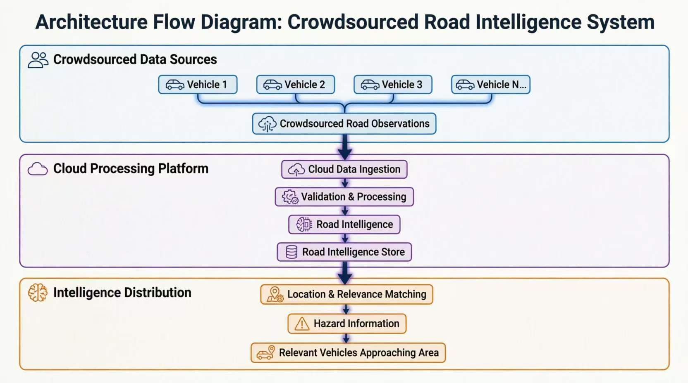

Crowdsourced Road Intelligence System
Primary Focus: Software, data processing, and cloud architecture
Overview
The Crowdsourced Road Intelligence System is a software-focused concept for collecting and sharing road intelligence through data contributed by participating vehicles.
The system is designed around a crowdsourced model: vehicles can contribute observations about road conditions along with relevant location and sensor data. These observations are processed and validated in the cloud before being added to a shared layer of road intelligence.
The resulting information can then be matched to vehicles approaching the relevant location or travelling through the same vicinity, providing them with advance awareness of reported hazards or road conditions.
The system is not intended to replace human vision or driver awareness. Its purpose is to provide an additional layer of shared road awareness by allowing information encountered by one vehicle to become useful to other road users.
Core Goal
The primary goal is to explore how useful road intelligence can be collected at a lower cost and made available in areas where expensive road-monitoring infrastructure or specialized surveying systems may be unavailable. Instead of relying on a single dedicated monitoring system, the platform explores how observations from many participating vehicles can collectively contribute to a broader understanding of road conditions.
System Flow
Vehicle observations → Cloud ingestion → Validation & processing → Road intelligence → Location & relevance matching → Hazard information for approaching vehicles
Prototype
The initial proof of concept uses a bicycle-mounted setup to simulate a participating vehicle and provide real-world sensor data for testing.
- Camera
- GPS
- 9-DOF IMU
- ESP32-S3-CAM
The prototype hardware is primarily used to validate the software and data-processing concepts. It does not define the final architecture.
Hardware-Agnostic Design
The system is intended to remain hardware-agnostic. Different cameras, GPS devices, sensors, vehicles, or other compatible data sources could be used as long as they provide the information required by the processing pipeline. This allows the project to focus primarily on the software architecture and intelligence layer rather than being tied to a specific hardware platform.
Current Development Focus
Flow Diagram

Future Direction
The long-term concept is to explore how observations from a growing number of contributors could be combined to create increasingly useful and reliable road intelligence, particularly for areas where conventional road-monitoring infrastructure is limited.